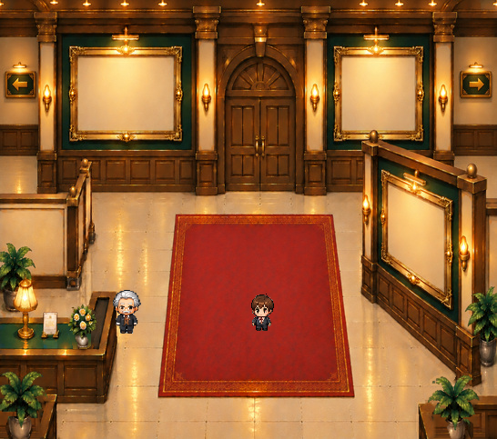

合成状態を切り替えて確認

原本の画風を保ち、正式キャラクターPNGと3箇所のサンプル写真を使用しています。
統合で確認した内容
背面左右・右手前の写真枠、北扉、右展示壁と手すり、左前景、受付カウンター、観葉植物・花器・台座、金縁・壁灯・案内板を、個別素材として合成しています。


これはゲーム本体の完成版ではなく、B01全体合成のQA候補です。植物・台座を外した左側の木製カウンターには修復継ぎ目が残るため、この状態は未合格。Lv.2〜6の装飾順序やゲームの当たり判定も未統合です。